UV editing
The UV editor shows the model's texture layout over any texture map. You can paint the parts you want as islands, check and set texel density, unwrap, pack and transform islands, mark seams and stitch vertices. Paint you have already done stays on the model while the layout changes under it.
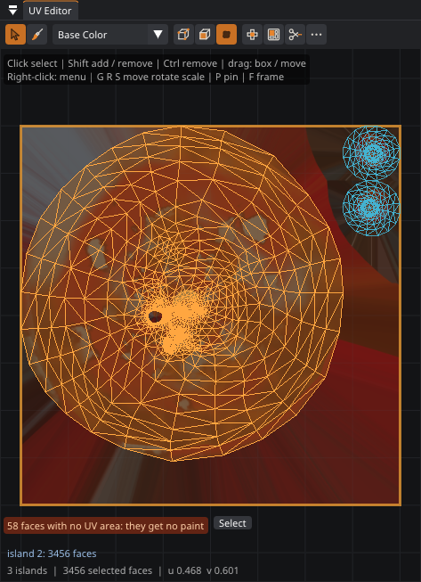
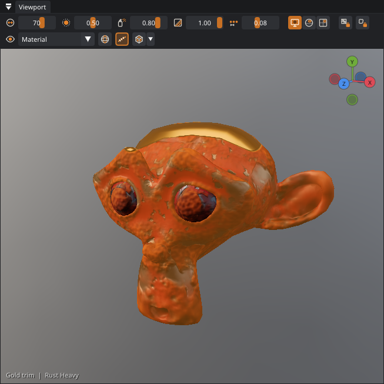
Why edit UVs in a painter?
Patina paints in 3D, so a messy layout never spoils your strokes. The layout still decides two things: how many texture pixels each part gets, and whether two parts share pixels. If they share, painting one paints the other. Fixing those is a matter of a few clicks.
The Island brush: paint a part, get an island
The quickest way to a good layout doesn't need seams or the UV editor at all. Choose the Island tool (L), paint over the part of the model you want as one piece of texture (a sleeve, a lid, a panel), and press Enter (in the Blender keymap U, like Blender's Unwrap). Patina then:
- cuts seams around the painted area and removes any seams inside it;
- unwraps it with LSCM, which stretches, scales and twists it flat with the least distortion;
- turns it upright, so “up” on the model is “up” in the texture (or along its longest side);
- scales it to the target texel density, so it gets as many pixels per meter as the rest of the model;
- finds empty space in the layout for it, leaving every other island where it is. Only if there is no room left are all islands repacked at an equal density;
- moves the paint you already have with it, so nothing changes on the model. The whole thing is one undo step.
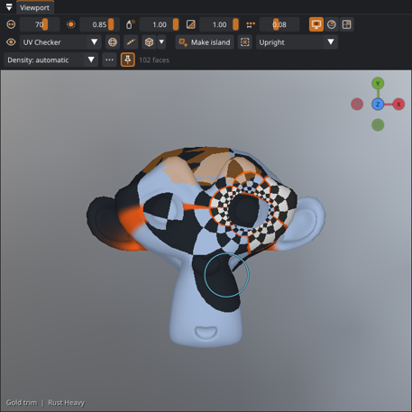
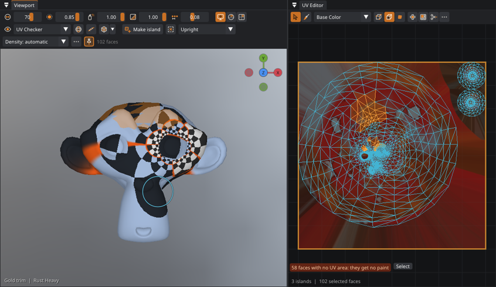
Each stroke is one undo step (Island Brush in the History panel), so Ctrl+Z takes a stray stroke back. Hold Ctrl to remove faces from the painted area, and use Ctrl+Numpad + / - to grow or shrink it by one ring of faces. A selects every face, or none when some are selected, with any tool (1.2.10), and Alt+A clears the selection. The bar above the viewport has Make island, Clear, the orientation and the density target. If the painted area falls into several separate pieces (for example the brow and the eyes, which are separate parts of the mesh), each piece becomes its own island.
Two buttons on the same bar choose what a dab takes. Surface (the default) takes the faces within the brush's size along the surface from the face under the cursor, so a dab covers the same patch of the model whatever angle you see it at, and it never jumps to a surface that is only near in space: the inside layer of a cloth with thickness, the other leg, a strand of hair lying over the face. Screen takes the faces you see inside the circle, which on a surface seen edge-on is a long strip. Either way, faces turned away from you are left out unless they are what you see, so neither reaches the far side or the layer just behind the one you paint. Turn the model to paint the back.
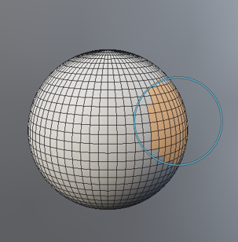
Symmetric islands
With mirror symmetry on ( Mirror X / Y / Z in the tool strip), the Island brush paints the mirrored faces too, and Make island unwraps only one half: the faces on the positive side of the mirror plane. The other half gets the same UVs, mirrored, so both halves share one place in the texture: paint one ear and the other ear has it too, and the layout spends its pixels only once. A region that crosses the mirror plane (the face of a head) gets a seam along the plane, and its two halves are stacked the same way.
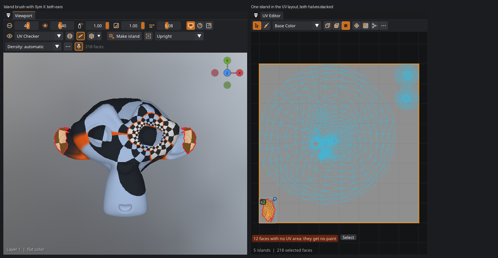
The two halves stay linked: moving, rotating or scaling either half moves both, in the UV editor or with any UV tool, so they can't drift apart by accident. The UV editor marks an island with a stacked half on it with x2. To give one side its own place in the texture (for text that must read the right way on both sides, say), right-click it › Mirrored Halves › Unstack (Make Independent). If the halves of a project from Patina 0.6 were moved apart, the UV editor says so and Re-stack puts them back.
Stacked mirrored halves are on purpose, so the overlap check (Overlapping UVs) doesn't count them. The halves only stack where the mesh really is symmetric: faces without a mirror partner are unwrapped as usual. Faces are matched by their corners, so the two sides don't need identical triangles: where a model's quads were triangulated along different diagonals on each side (common in exported game and character models), the mirrored selection still covers the whole region and every face on the other side is stacked. At the edge of a selection the other triangle of a split quad joins, so no face is left over.
The halves don't have to be the same shape either. Patina first pairs the vertices that sit exactly opposite each other, then follows the mesh outwards from them: each remaining vertex is paired with the one whose neighbors mirror its own neighbors. So a posed or sculpted model, or one whose sides drifted apart by up to about an edge length, still stacks correctly wherever both halves are built from the same polygons. The vertices down the middle don't have to be on the mirror plane: on a cloth simulation they wander a few millimeters off it, and a whole panel can sit to one side, and they still pair with themselves (since 0.43; before, the faces along the middle of such a model were left unstacked, so its islands came out lopsided). A cloth with thickness works too. The log says how many vertices were paired exactly and how many by following the mesh. Parts that are modeled differently on each side (an extra edge loop on one side, a missing face) have no partner. They are unwrapped on their own, so check them in the UV view.
The texels belong to the half that was unwrapped: fill layers, smart masks and bakes are evaluated there, and the stacked half shows the same texels mirrored. A brush stroke on either half paints both.
Mirrored UVs suit color, roughness and most other maps. Anything that has to differ between the
sides, such as text or a number, needs its own island; make it with symmetry off. Radial symmetry doesn't stack
islands. Claude makes symmetric islands with uv_make_island and symmetry: ["x"].
uv_make_island).Pinning islands
Once an island is where you want it, pin it: select it and press P in the UV editor (or UV › Pins › Pin Selected Islands, in the menu bar or the UV editor's right-click menu). A pinned island keeps its UVs through every UV edit: dragging it, G / R / S, Pack, Unwrap, Orient, Fix Overlapping UVs and the Island brush all leave it where it is, and the UV editor tells you it is pinned instead of moving it. Packing and unwrapping put the other islands in the space around the pinned ones, at the pinned islands' texel density. Alt+P unpins.
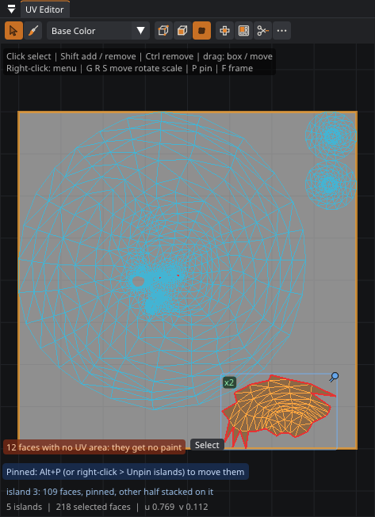
The Island brush pins the islands it makes (the Pin box next to Make island; untick it to leave new islands unpinned). Pins cover whole islands, and pinning one half of a symmetric island pins the stacked half too. Pins are saved with the project, and undo restores them like any other edit. UV › Select › Pinned Islands finds them, and UV › Pins › Unpin Every Island releases them all.
Pinning in the 3D view
You don't need the UV editor to pin or unpin. With the Select tool, the bar over the 3D view has Pin and Unpin for the selected faces' islands, and the number of selected faces that are pinned. The Island tool has Unpin too, for the painted faces. Alt+P unpins over the 3D view as well as in the UV editor. While either tool is chosen, pinned islands have blue stripes on the model, so you can see what is pinned before you select it. Right-click the model for Pin Its UV Island or Unpin Its UV Island, for the island under the pointer.
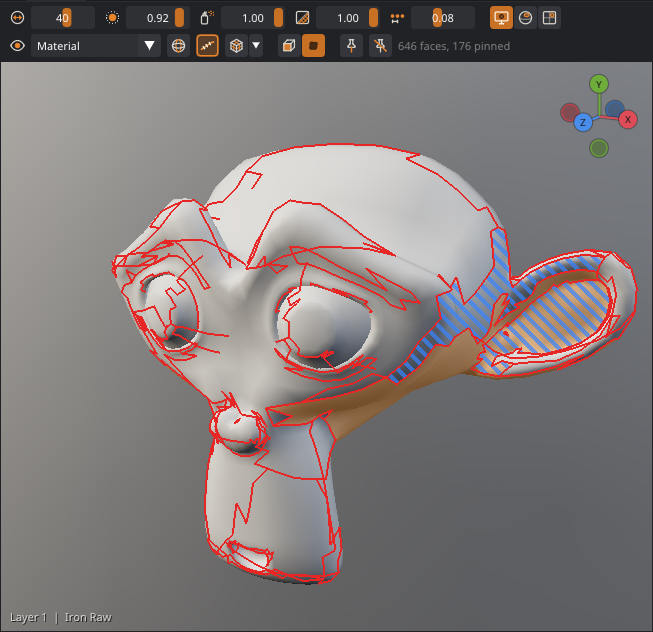
Only what the camera sees
With the Select tool in Islands mode, a click or a drag takes the whole UV island under the pointer. That includes the parts you can't see: the inside of a dress, the back of a sleeve, a skin under clothes. Turn on Visible only on the tool's bar (0.45), and it takes just the island's faces the camera sees. Those are the faces turned toward you, on screen, and not hidden behind other faces.
Turn the view and click again to add more of the island. Ctrl+click takes the seen faces off.
Faces mode doesn't change, since the face under the pointer is always one you see. Agents use
select_faces with visible: true. The switch is Select only what the camera sees in
Preferences › Features.
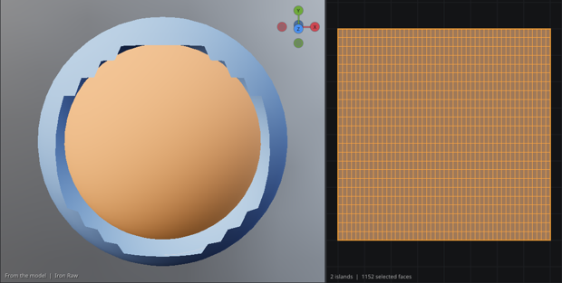
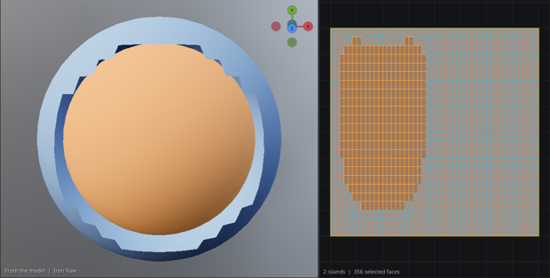
Loops, rings and linked faces
The Select tool picks faces in batches too (1.2). The clicks work the same in the UV editor, by the UV edge nearest the pointer:
| Do this | To select |
|---|---|
| Alt+click by an edge | The loop of quads across that edge, both ways, until a face that isn't a quad, a border, or the loop closes. This is Blender's face loop: round a sleeve, along a belt. |
| Ctrl+Alt+click by an edge | The ring along that edge instead: the band the other way. |
| Shift with either | Adds the loop or ring to the selection. |
| Connected on the tool's bar | The whole connected parts the selected faces are in. |
| Flat region on the tool's bar | Grows the selection over the surface while it bends less than the angle beside the button, face to face: a box's side, a flat panel of armor. |
Right-click a face and open Select to do the same from that face, and to take its UV island or material slot.
Loops and rings run through quads, so on a model made of triangles they stop at the face clicked. Each selection is one
undo step. Agents use select_loop and select_linked.
Face sets
A face set is a named, colored group of faces, kept in the project, like Blender's sculpt face sets (1.2). A face is in one set at most. Sets are for the parts you paint, fill or mask again and again: a belt, the soles, the trim of a coat. The Face Sets panel (UV › Face Sets, a tab beside Properties) has them.
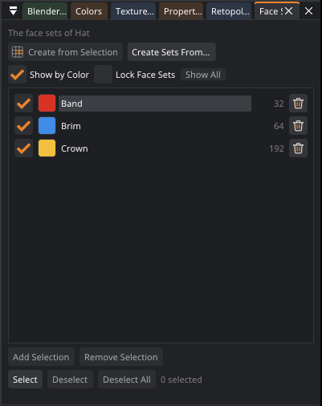
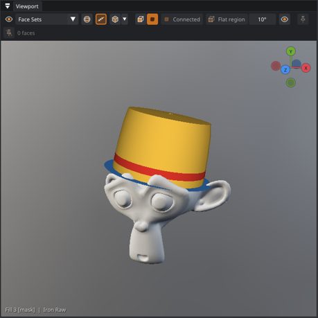
The panel works like Blender's vertex groups (1.2.10). One set is active: its row is lit, and the buttons under the list work on it.
- Create from Selection makes a new set of the selected faces. They leave the sets they were in. Those sets stay, with their names and colors, even when no faces are left in them.
- Create Sets From... makes a set for each material slot, UV island or connected part, in place of the sets there were.
- Click a set to make it the active set. Double-click renames it, and the color swatch changes its color. The trash at the end of the row deletes the set. Its faces stay on the model, in no set.
- Under the list: Add Selection puts the selected faces in the active set, and Remove Selection takes them out. Select adds its faces to the selection, Deselect takes them out of it, and Deselect All clears the selection.
- The eye hides a set. Its faces leave the 3D view, the brush and picking, so you can paint what is under them. Renders and exports keep them. Show All brings them all back.
- Right-click a set for the same actions and more: Show Only These Faces, Show All, fill it with the paint material, mask the selected layer with it, rename or delete it.
- Lock Face Sets keeps a stroke inside the set it starts on. It is on the panel and on the bar over the 3D view with the other locks.
- Show by Color switches to the Face Sets view. The UV editor tints each set's faces in its color too.
Face sets follow their faces when the mesh changes: a bake-down onto a low-poly model, a reduction, a remodeled mesh
from Blender. Blender's sculpt face sets come in with the model (the add-on 0.14) when Patina has none for it. Agents use
list_face_sets, make_face_set, edit_face_set, delete_face_set and
use_face_set. The switch is Face sets in Preferences › Features.
Texel density
Texel density is how many texture pixels one meter of surface gets (1 unit = 1 m in Blender). When it is the same everywhere, details and scratches are equally sharp all over the model. UV › Islands › Texel Density… shows the numbers for the current texture size and sets the target the Island brush uses:
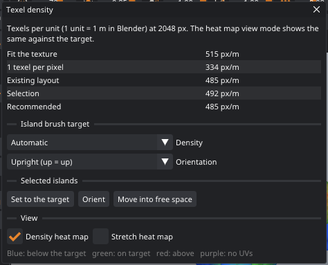
| Target | Means |
|---|---|
| Fit the texture | The whole surface would fill about 70% of the texture. Mirrored halves stacked on their other half share its texels, so they don't count. |
| 1 texel per pixel | With the model framed in a 1080p view (normal viewing), one texel lands on one screen pixel. Sharper than that is wasted. |
| Match the layout | What the existing islands in the 0–1 square use. It is the median by surface area, so neither one odd island nor a crowd of small ones skews it. Islands mostly outside 0–1 (tiled UVs) are left out. |
| Custom | A px/m value of your own, for example a studio standard such as 512 or 1024 px/m. |
Automatic matches the layout when there is one, up to twice Fit the texture (a denser layout overlaps heavily, and new islands at that density would not get room of their own). Otherwise it uses the smaller of the first two. When the texture is too small for one texel per pixel, the window says which size would be enough.
Set to the target, Orient and Move into free space act on the islands of the selected faces.
Density and stretch heat maps
Two view modes (in the viewport's view combo, or the check boxes in the window) color the model instead of guessing from the checker:
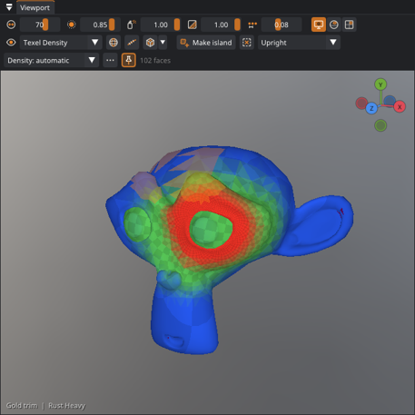
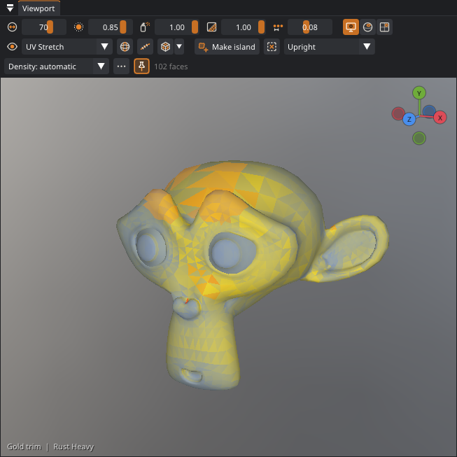
Overlapping UVs
When two islands share texture pixels, painting one paints the other. The UV editor shows a warning when that happens, and UV › Fix Overlapping UVs moves the smaller island of each overlapping pair into free space (or repacks everything if there is no room). Mirrored halves that overlap on purpose are moved apart as well, so fix them only if you want each side painted separately.
Faces with no UV area. A face whose UVs all sit on one point (or one line) gets no paint, and you can't see or click it in the UV editor. The editor warns when a model has some; Select selects them, so you can unwrap them (right-click › Unwrap the Selection). Before 0.11.1 such a face could catch clicks meant for other islands.
Orient, free space, grow and shrink
| UV menu | What it does |
|---|---|
| Orient Upright | Turns each island so that the model's up direction is up in the texture. Wood grain, text, drips and tiles then run the right way. Flat, horizontal islands are laid along their longest side. |
| Orient Along Their Longest Side | Turns each island so its smallest bounding box lies along U. Packs tighter. |
| Move into Free Space | Places the selected islands in empty parts of the layout without moving the others, so a finished layout (and its paint) stays put. |
| Straighten (Rectify Quad Islands) | Straightens quad strips and grids into exact rectangles (see below). |
| Mirror UVs (X) | The −X half takes the mirrored UVs of the +X half (see below). |
| Select › Grow / Shrink | Adds or removes one ring of faces (Ctrl+Numpad + / -). |
Rectify quad islands
Belts, straps, pipes, trims, planks and ladders are strips or grids of quads, and they are much easier to texture when their island is a straight rectangle: a tiling material, stripes or stitching then run straight along them. An unwrap or projection usually leaves such islands curved or wobbly. UV › Islands › Straighten (Rectify Quad Islands) straightens each island that is a grid of quads into an exact grid: rows become horizontal lines and columns vertical lines. Each column keeps its width and each row its height from the 3D model (averaged along the row), so nothing is stretched, and the island keeps its texel density and its position. Islands that would overlap afterward are moved into free space.
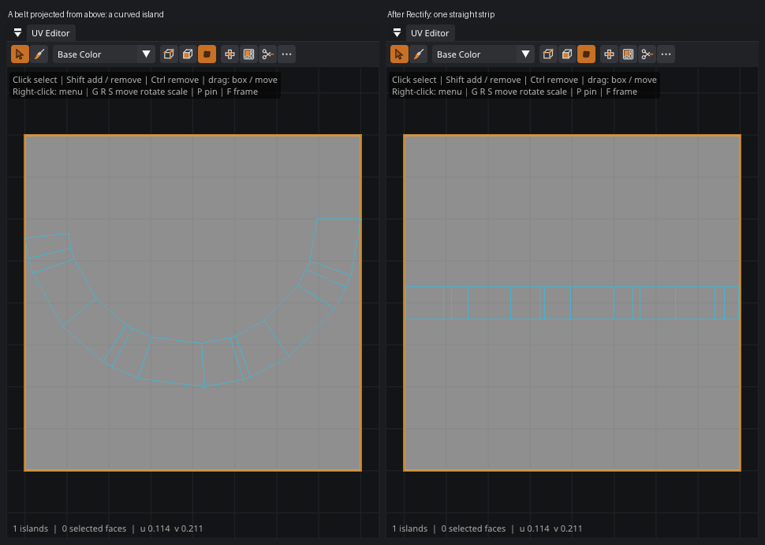
With a face selection it works on the islands of the selection, otherwise on every island. Islands that are not a
clean quad grid (triangles, or a vertex where five quads meet) are skipped, and the status line says how many. It is
one undo step, and paint moves with the UVs like any other UV edit. Claude uses uv_rectify.
Mirror UVs
On a symmetric model, the two halves can share one place in the texture so that the layout spends its pixels only
once (see Symmetric islands). UV › Mirrored Halves › Mirror UVs (X) does that for UVs you already
have: every face on the −X side takes the mirrored UVs of its partner face on the +X side, so the −X half stacks
exactly on the +X half. Seams are added where a mirrored face meets one that was left alone. Faces without a mirror
partner (the mesh isn't symmetric there) keep their UVs. Follow it with Pack if you want the freed space used.
Claude uses uv_mirror, which can also mirror across Y or Z.
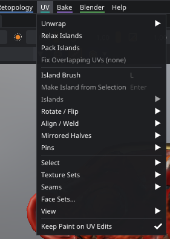
- Islands: orient upright or along the longest side, straighten (rectify quad islands), move into free space, texel density.
- Rotate / Flip and Align / Weld: 90° and 180° turns, flips, aligning, stitching, fitting to 0–1.
- Mirrored Halves: select the other half, mirror UVs, unstack, re-stack, check the mesh's symmetry.
- Pins: pin or unpin the selected islands, or every island.
- Select: all, none, invert, grow, shrink, whole islands, the other half, the whole material slot, pinned or overlapping islands.
- Texture Sets: a texture set of their own for the selected faces, or move them into one that exists.
- Seams: around the selection or none inside it, from the islands, by angle, clear them all.
- Face Sets, View (frame the selection with F, or 0–1 with Home), and Keep Paint on UV Edits.
A command that would change nothing says so, and makes no undo step: Orient Upright on islands that already are upright says "Already upright: nothing turned", and Relax on relaxed islands says "Already relaxed".
The other half
Mirrored Halves › Select the Other Half adds the mirror image of the selection across the model's X symmetry,
wherever it is in the layout: a face unwrapped in two halves side by side, or halves stacked on each other. Select one
half of the face, and the other half joins (whole islands, when you selected whole islands). Then
Mirror the Selection's UVs (X) stacks the −X half on the +X half, for those faces only, so paint on one side shows
on both. Claude uses select_faces with mode: "mirror".
The UV editor
At the top are Edit UVs and Paint (texture-space painting), the texture shown underneath (any channel, a baked map, a layer, or a checker), and the selection mode.
The right-click menu
Right-click in the UV editor for every UV operation in one place. If what is under the cursor isn't selected yet, it is selected first, so right-click an island and pick what to do with it:
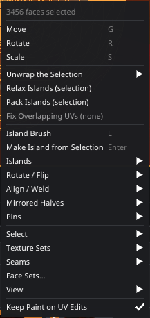
The More button above the editor has the same operations, plus the display options. Hovering over an island shows its number, face count, and whether it is pinned or has a mirrored half; warnings about overlapping or drifted islands have a button that fixes them.
Selecting
| Mode | Click selects |
|---|---|
| Faces | One face |
| Islands | The whole island under the cursor |
| Vertices | One UV vertex: all face corners of a mesh vertex that sit at the same UV position |
Shift+click adds to the selection; Shift+click on something already selected takes it off again, as in Blender. Ctrl+click removes from it. Dragging on empty space draws a box selection, and A selects or deselects everything. The Select tool (S) in the viewport selects faces and islands directly on the model, which is often easier.
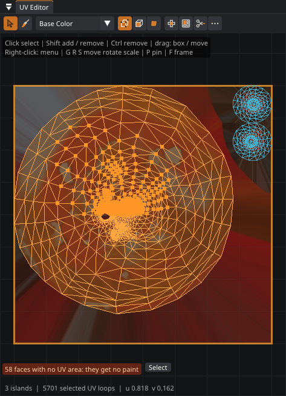
Moving, rotating, scaling
- Drag a selection to move it. It only starts to move once the mouse has traveled a few pixels, so clicking on a selected island (to select just that one) never nudges it. Dragging an unselected island selects and moves it in one go. Pinned islands don't move.
- G / R / S start a move, rotate or scale that follows the mouse. Click or press Enter to confirm, and right-click or press Esc to cancel. Hold Ctrl to snap (1/64 steps, 15°, 0.1×).
- More menu: rotate by 90°, flip, fit the selection to 0–1, Weld / stitch (moves the selected corners of each mesh vertex to their average; select both sides of a seam to stitch it closed) and Align vertically or horizontally.
Unwrap and pack
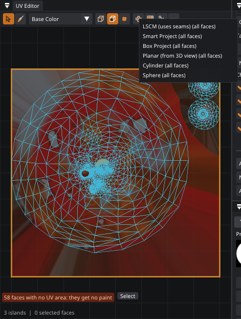
| Command | What it does |
|---|---|
| LSCM (uses seams) | Flattens the surface, cutting along the seams you marked. Gives the least distortion. Best for organic shapes. |
| Smart Project | Splits the mesh by face angle (66°) and projects each part flat. Quick, and good for hard-surface models. |
| Box Project | Projects from the six axis directions. Good for boxy shapes and buildings. |
| Planar (from 3D view) | Projects straight from the current view direction. |
| Cylinder | For arms, legs, fingers, horns, pipes and barrels: cuts the part open along one line and flattens it into a single strip. Its ends become islands of their own. The cut follows the tube's own center, so bent and tapered parts come out even. Select one part first. |
| Sphere | Longitude and latitude, like a globe: for eyes, heads seen as balls, and domes. |
| Relax | Removes stretch from the selected islands. Each one is solved again and put back where it was, at the same size and angle, so the rest of the layout doesn't move. Pinned islands are left alone. |
| Pack | Arranges islands to fill the 0–1 square and evens out texel density so no part gets fewer pixels than another. Islands are packed by their outlines, so small islands fill the gaps and hollows of big ones (see below). With a selection, only the selected islands are packed, into the space the others leave. |
With a selection, the operations act only on the selected faces. Without one, they act on the whole mesh.
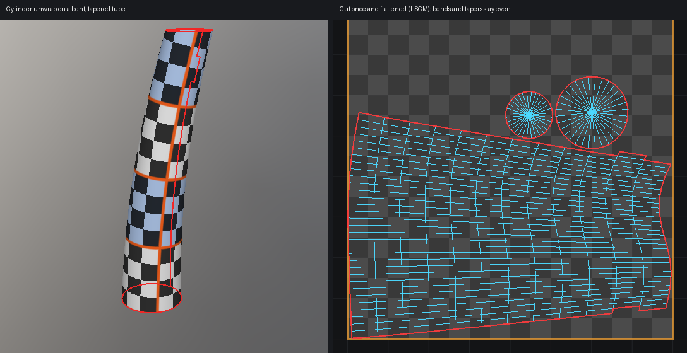
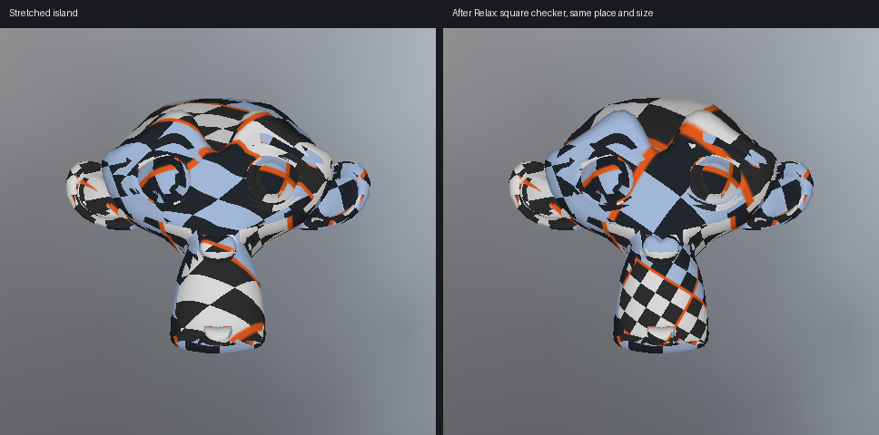
Packing by shape
Patina packs each island by its real outline. Each one, largest first, goes to the lowest place where it fits, turned to
whichever of four angles hugs its neighbors best. The islands are then scaled up as far as they all still fit. A curved
or L-shaped island no longer takes the space of its whole bounding box. On a typical Smart Project layout the islands get
around 60% of the texture instead of under 40%, so the same texture resolution gives finer detail. For layouts of plain
rectangles, boxes pack just as tightly and much faster, so Patina tries both and keeps the better one. Pinned islands stay
where they are, and the others are packed around them. Claude and scripts can ask for uv_pack with
"quality": "fast" to get bounding-box packing.
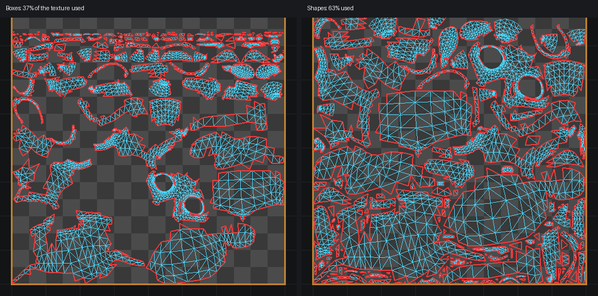
Seams
Seams are the cuts that LSCM unwraps along. The Seams tool (M) is a seam brush:
- Drag across the model. The seam follows the mesh's edges from vertex to vertex under the cursor, taking the shortest way between them, and is one undo step.
- Ctrl+drag clears seams the same way.
- Shift+click continues from where the last seam ended. While Shift is held, the path a click would add is shown faintly. Use it to run a seam around a sleeve or down the inside of a leg with a few clicks.
- A plain click toggles the one edge nearest the cursor.
Vertices at the same position count as one, so seams run straight across meshes that were exported with split vertices.
The Seams menu can also create seams from the current islands or by angle, and can clear them all. Seams travel with
the mesh to and from Blender. Claude can lay seam paths with uv_seams in path mode.
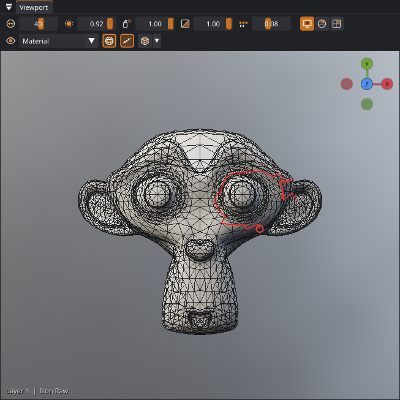
Painting in texture space
Switch the UV editor to Paint to paint straight onto the texture with the current brush. Use it for things that belong to the layout rather than the surface: trim sheets, labels placed by UV, or touching up a single island. The brush size is in screen pixels of the UV view, so zoom in for detail.
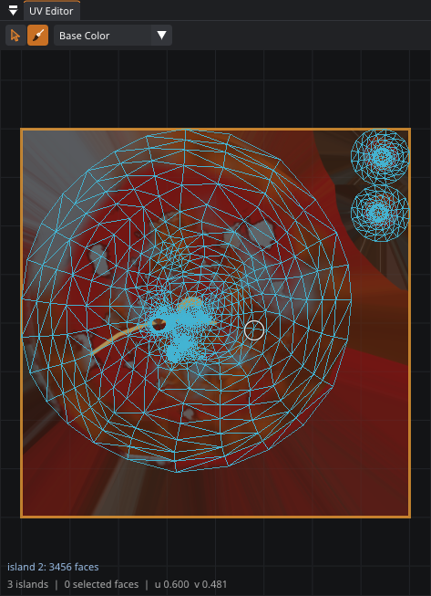